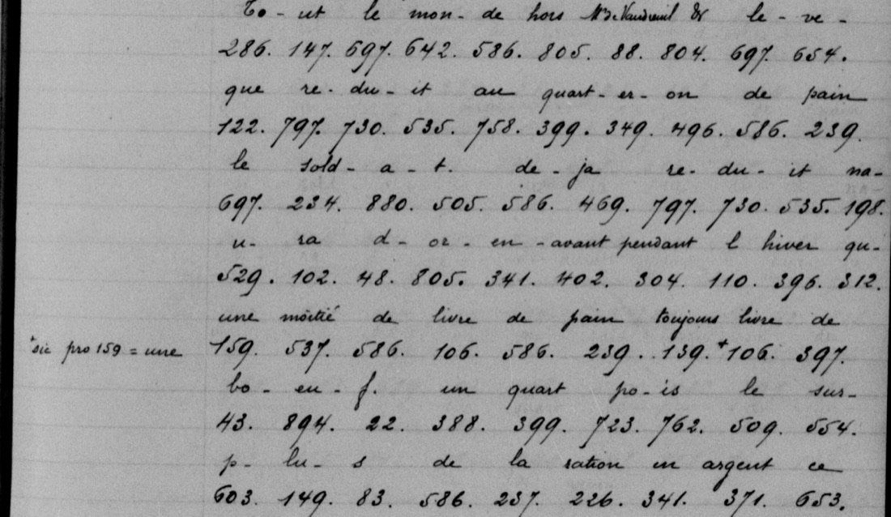
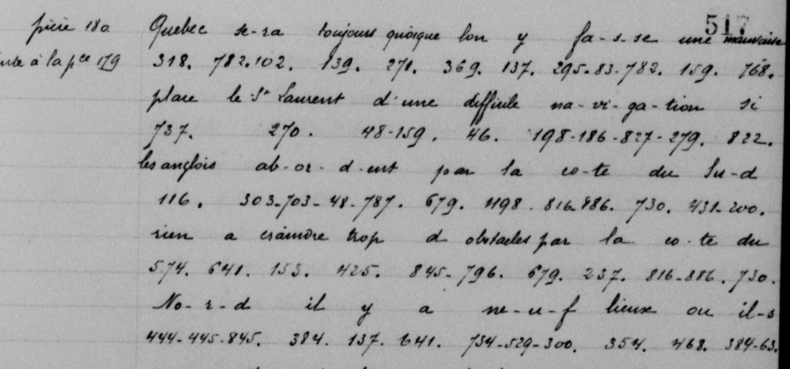

At a glanceKey from adjacent plaintext · partial (637 of 648 words unmarked)
- The letter
- Montcalm to the war minister Paulmy, Québec, 4 November 1757, with an annexed cipher sheet. Only the cipher passages are given here: every cipher extract of the letter (610 groups) and the whole sheet (306 groups).
- Where
- Service historique de la Défense, GR A1 3457, pièces 179 and 180, in the copy made for the Public Archives of Canada: Library and Archives Canada, MG4 B1 série A1, reel C-12578, pp. 503–518 (the cipher on pp. 505–506, 510–513 and 517–518).
- What it says
- An officer’s report that Louisbourg’s main works “ne vaut rien”; bread cut to a quarter-pound for everyone but Vaudreuil and the bishop, horse and cod in place of beef; Vaudreuil and Bigot privately asking Montcalm to press the King; and a plan to meet an English landing between the Montmorency falls and the Saint-Charles with redoubts, lines and cannon on the heights.
- The cipher
- A numerical code of the War Department, our working name “code W”: numbers up to about 900 for letters, syllables, words and names, in no alphabetical order.
- How it was deciphered
- The copy carries the decipherment written between the lines at the time. It was transcribed group by group and normalized, and 318 code values were indexed from it. This is not an independent decipherment.
- Still open
- Two numbers whose digits are unsettled on the copy (p. 506 670 or 690, p. 518 2?5), a few conflicting values such as 63, and the French originals, which were not seen.
- Credit
- The anonymous clerks who deciphered the letter at the time. Transcription, code index and translation contributed by Andrew Beling, with AI agents.
01 What the printed edition left out
Montcalm’s letter of 4 November 1757 to Paulmy is in print in English in the Documents relative to the Colonial History of the State of New-York, volume X (1858), pp. 669–671. The editor left the cipher out: the translation reads “Here follows, in the original, a paragraph in cipher, which is omitted in the French text”, and later “Here is omitted another paragraph in cipher”. The letter twice mentions a cipher sheet annexed to it, and that sheet is not printed either.
The cipher passages hold what Montcalm would not write in clear. On Louisbourg, after an officer’s report: a landing is easy, the front to guard is long, “le corps de la place ne vaut rien”, and a thousand more men are needed. On food: everyone except Vaudreuil and the bishop is cut to a quarter-pound of bread; the soldier gets half a pound of bread and a pound of beef, and out of every eight days two of cod and two of horse, “comme à Prague”. Montcalm cut his own table and had horse served on the days it was issued; Bigot hesitated, then followed. Vaudreuil and Bigot asked him, “de vous à moi”, to write strongly and beg the minister to speak of it to the King. The extract ends: without the provisions he took from the English, the country would have been lost.

02 The plan for Québec
The annexed sheet (pièce 180) is Montcalm’s plan for the next campaign. Québec “sera toujours, quoique l’on y fasse, une mauvaise place”. A landing on the south shore is not to be feared, and on the north shore there are too many obstacles as far as the Montmorency falls; so the English must land between the falls and the Saint-Charles, a stretch of 3,600 toises (about 7 km). There they are to be opposed with redoubts from the falls and lines along the little river, covered by cannon on the heights of Québec; if they try to turn the lines they meet the woods, full of Canadians and Indians. Short of food, the army will take the field late: in June toward Lidius (Fort Edward), “ne fût-ce que pour favoriser des courses”, and an expedition of Indians and Canadians toward Corlar; then, when food arrives, a march to Fort Duquesne in September if it has been taken. “Je me charge de l’expédition; tous les sauvages me suivroient.”
That stretch is the Beauport shore, where the French army stood in 1759; see History and significance.

03 History and significance
What the cipher says. In November 1757 Montcalm put into numbers what he would not write in clear to the war minister: that at Louisbourg “le corps de la place ne vaut rien” (the body of the fortress is worthless); that the bread ration was cut to “le quarteron de pain” (a quarter-pound) for all but Vaudreuil and the bishop, with “sur huit jours, au lieu de bœuf deux en morue” and two in horse (out of every eight days, two of cod instead of beef, and two of horse); that Vaudreuil and Bigot had asked him, “de vous à moi” (between you and me), to write strongly so the minister would speak of it to the King; and, on the annexed sheet, that the English would be “réduits à débarquer entre le saut et la rivière Saint-Charles” (forced to land between the falls and the Saint-Charles), to be met by “des redoutes depuis le saut, des lignes pour défendre la petite rivière” and cannon on the heights of Québec. The same sheet says Québec “sera toujours … une mauvaise place” and that the Saint Lawrence is hard to navigate.
What the references establish. Montcalm was appointed major-general on 11 March 1756 to command the regular battalions in Canada, under the governor general, Pierre de Rigaud de Vaudreuil, and reached Québec on 13 May 1756. Montcalm came to dislike Vaudreuil, and Montcalm came to accuse Vaudreuil and the administration of the intendant François Bigot of corruption, while staying openly on good terms with Bigot. After crop failures in 1757 the bread and meat rations were cut severely in the winter of 1757–58, there were protests in Montréal, and the issue of horse meat in place of beef had to be enforced with stern measures. Louisbourg surrendered to the British on 26 July 1758. Late in May 1759, when a British fleet was reported coming up the river, the shore from the Saint-Charles to the Montmorency was fortified under Montcalm’s direction, and he massed his army at Beauport. Wolfe’s assault on the Montmorency–Beauport lines on 31 July 1759 was beaten back. On 13 September his troops landed at the Anse au Foulon, above the city, and drew up on the Plains of Abraham; in the battle that followed Wolfe was killed and Montcalm mortally wounded, and Montcalm died early the next morning. Québec’s capitulation was signed on 18 September 1759; Vaudreuil capitulated at Montréal in September 1760; the war ended with the treaty of Paris of 10 February 1763.
Why the cipher matters. These are the passages Montcalm chose to hide, and they are the ones the New York Colonial Documents edition left out. They give, in his own words and two years before the siege, the idea of defending Québec on the shore between the Montmorency and the Saint-Charles, together with the officer’s verdict on Louisbourg that he passed on, eight months before it fell. The 1757 sheet anticipates the 1759 Beauport line; the references do not say that the 1759 works were built from this paper, and this page does not claim it. The continuity is not traced here: the 1758 and 1759 proposals of Montcalm, Lévis and others for Québec were not read, and the Dictionary of Canadian Biography notes that as late as March 1759 Montcalm thought Québec had little to fear because of the difficult river; the 1757 sheet also calls the river hard to navigate, though it calls Québec a poor fortress. Montcalm’s complaints about the rations and the administration fit the quarrels with Vaudreuil and Bigot that the biographies describe; the cipher shows him, in November 1757, reporting Vaudreuil and Bigot as his allies in pressing the King.
References: W. J. Eccles, “Montcalm, Louis-Joseph de”, Dictionary of Canadian Biography, vol. III (1974); W. J. Eccles, “Rigaud de Vaudreuil de Cavagnial, Pierre de”, vol. IV (1979); J. F. Bosher and J.-C. Dubé, “Bigot, François”, vol. IV; C. P. Stacey, “Wolfe, James”, vol. III; “Ramezay, Jean-Baptiste-Nicolas-Roch de”, vol. IV; all at biographi.ca. The date of the treaty of Paris is from the Wikipedia article “Treaty of Paris (1763)”.
04 The code and its key
The copy reproduces each cipher line as figures with the decipherment written above it, split group by group (“re-du-it”, “quart-er-on”). Aligning the two lines gives a value for every group. The index in key/W_1757_attestations.tsv holds the 318 numbers whose digits are clear on these pages, each with every value it takes and how often. It is an index of what these pages attest, not the key sheet of the time, which was not found. Some values conflict and are kept as they stand: 63 is vivres seven times and s once; 285 is eurs and in; 435 is ce and r; 685 is heurs and pas. The copyist’s own “sic pro” notes are kept with the groups they mark.
It is not the code of the Vaudreuil letters on this site (Vaudreuil to the minister, 1760), which use the 1757 Vaudreuil table of ANOM COL C11E 10, sheet e001295274: of the 243 numbers present in both, none has the same value. The third numerical sheet of that volume (e001295276) was compared on 13 November 2026: it is a second handwritten copy of the Vaudreuil table, and agrees with this code on 1 of 238 shared numbers, no better than shuffled tables.
Henri-Raymond Casgrain’s Collection des manuscrits du maréchal de Lévis, volume III (1890), p. 64, prints Paulmy’s letter of 10 April 1757 sending Montcalm “un petit chiffre”. Whether that is this code is uncertain: Paulmy offers it for a private and secret correspondence, apart from Montcalm’s ordinary letters to the war minister, while this code is used in the ordinary dispatches and already appears in Montcalm’s cipher postscript of 3 November 1756.
05 How it was done
- The copies on reel C-12578 were found through the Canadiana Héritage viewer, and every cipher line of pp. 505–506, 510–513 and 517–518 was transcribed from the frames: 916 groups, figures and decipherment line by line.
- The decipherment was normalized into French sentences and translated into English. Supplied words are in brackets, and uncertain places are marked.
- The figures were aligned with the decipherment group by group and indexed. Two numbers whose digits could not be settled on the copy are kept out of the index.
- Doubtful digits were checked again on fresh full-size crops. That corrected 13 to 83 on p. 511. On 13 November 2026 a second AI agent, which had not seen the earlier conclusions, rechecked 25 index entries against the frames (24 confirmed, one unsettled) and read p. 511 and the first eleven lines of p. 517 digit for digit, with no differences. It also found that the copyist’s mark on p. 510 belongs to 139, not to the following 106.
- The French reading was checked against the English by an AI agent of the contributor. No person has checked the reading against the images.
637 of the 648 words of the French reading carry no uncertainty mark (measure_reading.py). That measures the marks in this edition of the decipherment of the time; it is not cipher coverage and says nothing about accuracy. A statistical test of the key was not run and is recorded as not applicable: the index was built from the same cipher and plain pairs the reading comes from, so a shuffled-key test could not show anything about an independent recovery.
06 What remains uncertain
- p. 506, the group after 654, read “rt” (in “couvert”): 670 or 690. The middle stroke is open like this copyist’s 7s, though two earlier readers saw a 9. Kept out of the index.
- p. 518, the middle group of “sept-em-bre”: 2?5, the readers disagree on the middle digit. Kept out of the index.
- Conflicting values (63, 285, 435, 685 and others): a slip of the copyist cannot be told from a slip of the encipherer without the French originals at Vincennes or the key of the time.
- The clear parts of the covering letter are not transcribed here. The full Lévis cipher sequence of 1759 and the other letters in this code were sampled, not read (
support/). - Earlier printing: phrase searches of the OCR of Casgrain’s Lévis collection, Chapais (1911) and the Quebec archivist’s reports for 1920–1942 found none of these passages, but the reports for 1924–1927 were not available. Nothing here claims that the passages were never printed anywhere. The Collection de manuscrits … relatifs à la Nouvelle-France, IV (1885), p. 153, prints the prose of a related memoir; its leftover groups 583 878 110 103 83 give “peuples”.
07 Sources
- Service historique de la Défense, GR A1 3457, pièces 179–180, in the Library and Archives Canada copy, MG4 B1 série A1, reel C-12578: letter, frame 523; first cipher, frame 525; ration passage, frame 530; annexed sheet, frame 537.
- Supporting letters in the same code: 3 November 1756 postscript, May 1758, September 1758, a page of Lévis’s cipher of 1759.
- Documents relative to the Colonial History of the State of New-York, X (1858), pp. 669–671: Internet Archive.
- H.-R. Casgrain (ed.), Collection des manuscrits du maréchal de Lévis, III, Lettres de la cour de Versailles (1890), pp. 63–64: Internet Archive.
- Collection de manuscrits contenant lettres, mémoires et autres documents historiques relatifs à la Nouvelle-France, IV (1885), p. 153: Internet Archive.
- The Vaudreuil table, ANOM COL C11E 10, sheet e001295274, as transcribed in targets/vaudreuil1760/.
Transcriptions, the decipherment line by line, the French reading and English translation, the code index with its uncertain digits, the digit audit and the supporting letters: targets/montcalm1757w/.